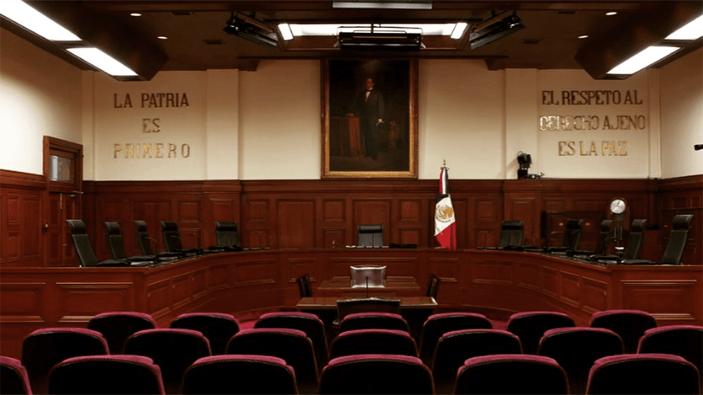

| Concepto | Definicion | Imagen | Mas informacion |
| ¿Qué es el Sistema Judicial? | El sistema judicial es el conjunto de instituciones, leyes y procedimientos encargados de administrar justicia, interpretar las leyes y proteger los derechos humanos. Garantiza el estado de derecho y resuelve conflictos de manera pacífica entre las personas y los órganos de gobierno. | Mas informacion | |
| El sistema judicial en Mexico | El Poder Judicial de la Federación conoce y resuelve las controversias que se presenten entre las personas, así como entre las personas y la autoridad. Para ello interpreta y aplica las leyes, hace respetar la Constitución Política de los Estados Unidos Mexicanos y los Derechos Humanos. El Poder Judicial imparte justicia. | Mas informacion | |
| ¿Cuáles son los órganos del Poder Judicial de la Federación? |
|
 |
Mas informacion |
| Conoce mas acerca del Poder Judicial en este audio | |||
¿Que fue lo mas interesante que aprendiste sobre el sistema judicial?
Escribe un comentario acerca del sistema judicial
¿Conocias esta informacion previamente?
Sí
No